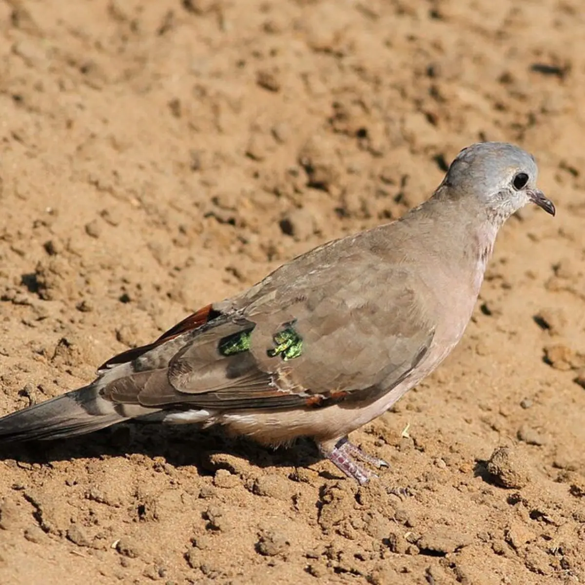
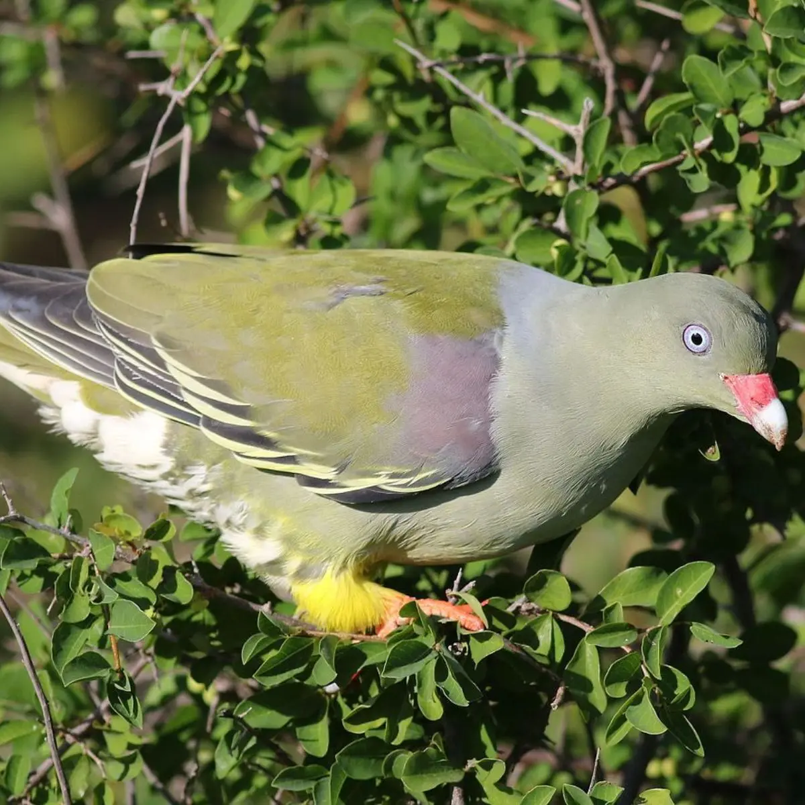
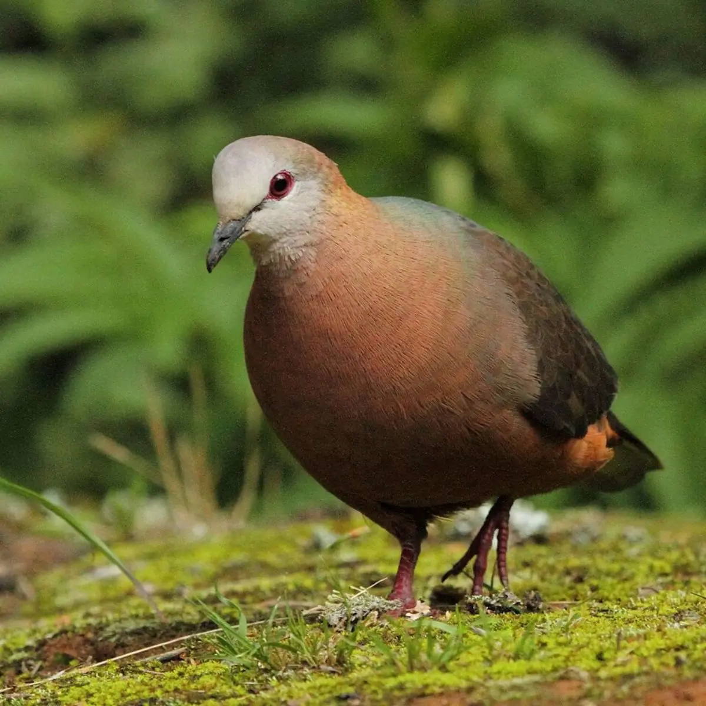
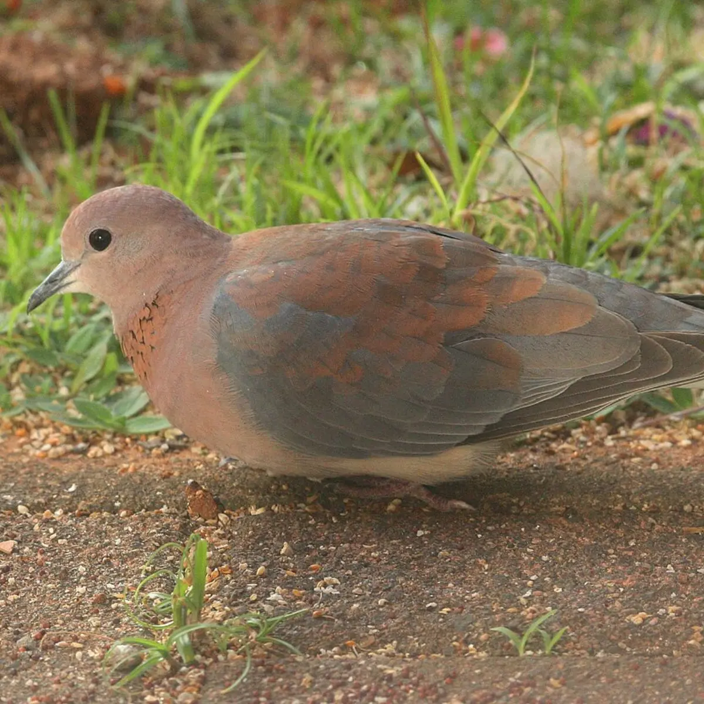
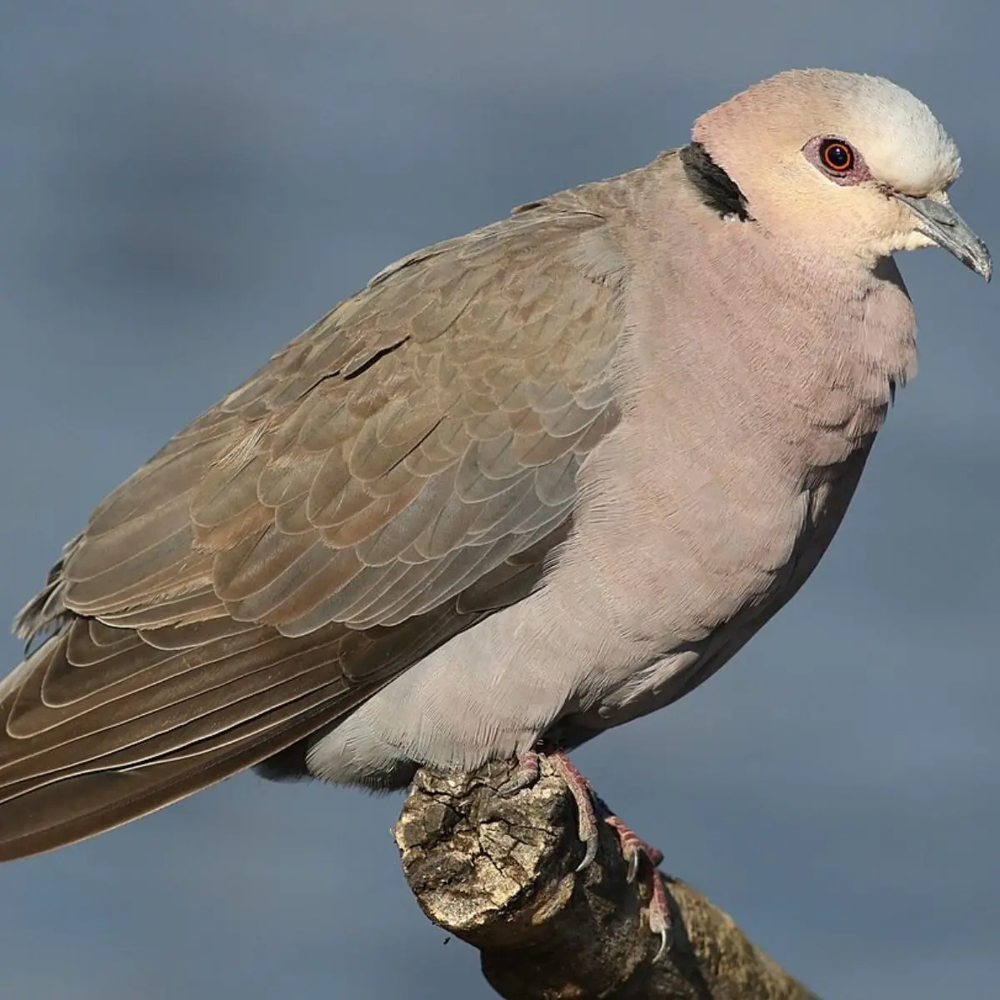
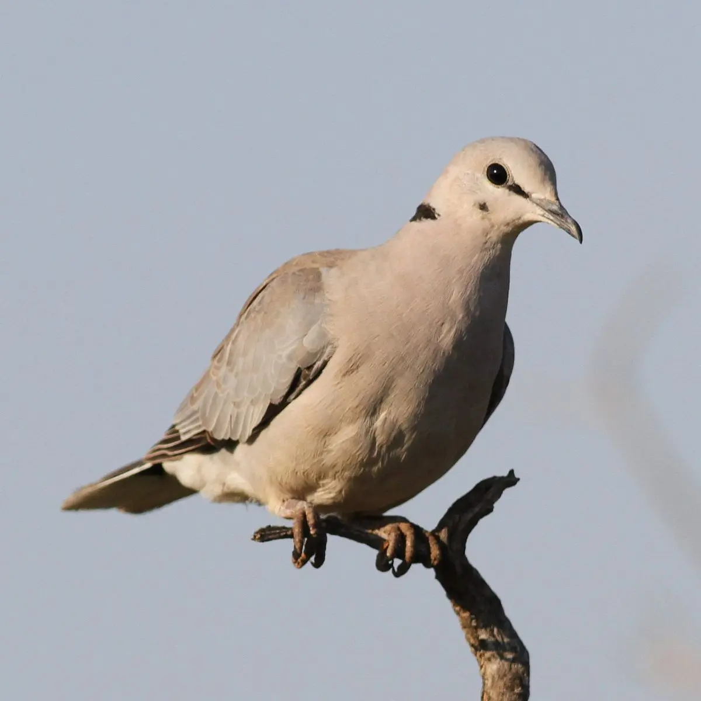
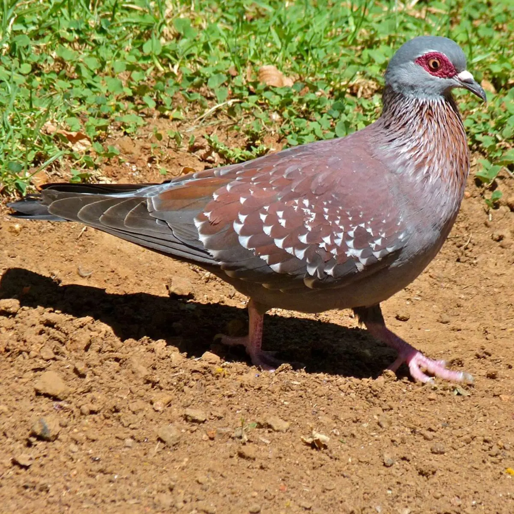
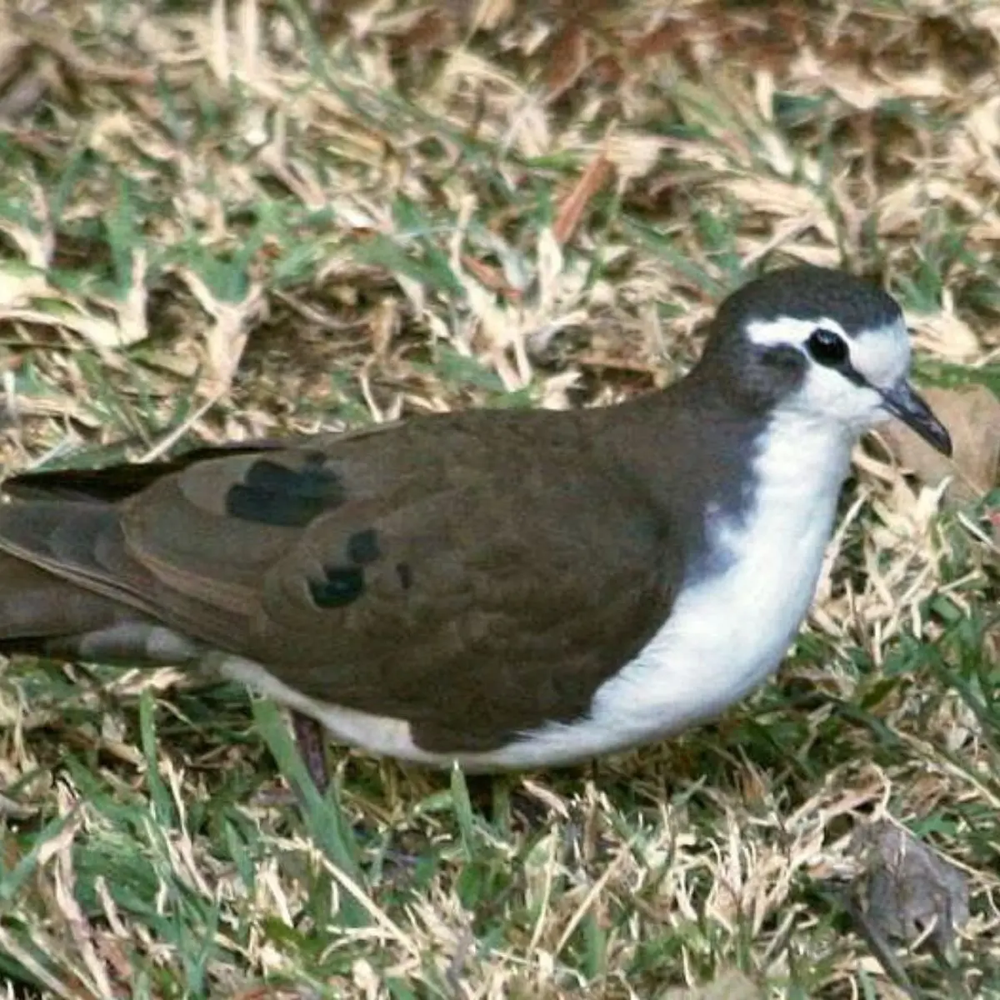
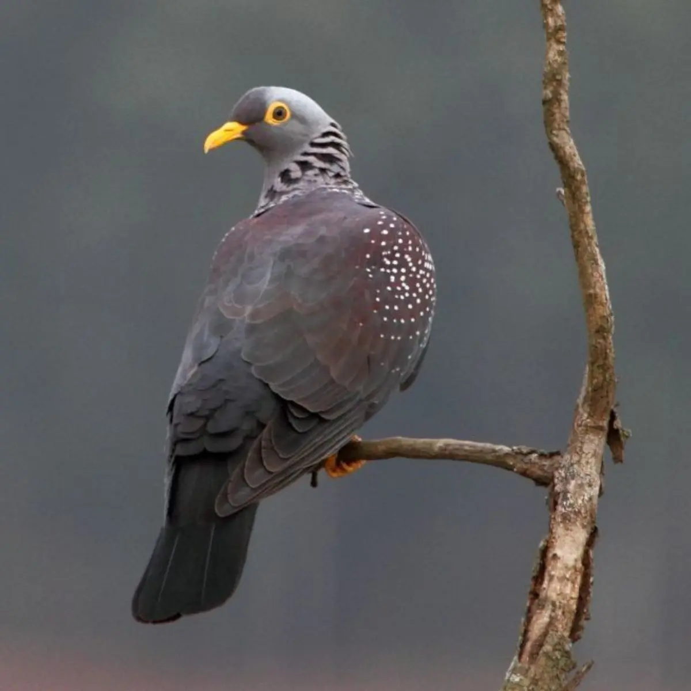

All the birds we know as either pigeons or doves belong to the same family, Columbidae, and scientifically there are no differences between pigeons and doves. In general, pigeons are larger and have squared-off tails while doves are smaller and have pointed tails, though this is not a hard and fast rule.
Afrikaans: Groenvlekduifie
isiZulu: isikhombazane sehlanze

A small, neat dove with a grey-blue head, pinkish chest, and bright emerald spots on the wings. It often walks quietly on the ground under trees and shrubs, where it pecks for small seeds, fallen fruit, and even termites.
Back to topAfrikaans: Papegaaiduif
isiZulu: ijubantondo

A chunky green pigeon that can be surprisingly hard to see among leaves, with maroon patches on the wings. It usually stays high in fruiting trees, especially feeding on figs, jackal-berry, waterberry, and other soft fruits.
Back to topAfrikaans: Kaneelduifie
isiZulu: isaqhukwe

A shy forest dove with brownish-grey plumage, a warm cinnamon breast, and a pale face. It spends much of its time feeding on the forest floor, searching for fallen seeds and fruit, with the odd small invertebrate as well.
Back to topAfrikaans: Rooiborsduifie
isiZulu: ukhonzane

A small, slim, long-tailed dove with soft pinkish-brown tones and a scaled patch on the side of the neck. It is often seen in pairs feeding on the ground, picking up grass seeds, grains, and the occasional small insect.
Back to topAfrikaans: Grootringduif
isiZulu: ihobelimehlabomvu

A large, stocky dove with a pink-grey head and chest, a black half-collar, and reddish skin around the eye. It often forages on the ground under trees, eating a wide range of seeds, berries, fruit, and sometimes insects.
Back to topAfrikaans: Gewone Tortelduif
isiZulu: usamdokwe

A very common grey-brown dove with lavender-grey underparts and a neat black half-collar on the neck. In flight it shows white outer tail feathers, and on the ground it feeds mostly on seeds and grains, with some berries or insects at times.
Back to topAfrikaans: Kransduif
isiZulu: ivukuthu

A large pigeon with reddish-brown wings covered in bold white speckles, plus red skin around the eyes. It is often seen on roofs, lawns, and roadsides, where it feeds mostly on seeds and grain, and only occasionally on small fruits or flowers.
Back to topAfrikaans: Witborsduifie
isiZulu: isikhombazane sehlathi

A small, shy dove of dense cover, with pale underparts and dark purple patches on the folded wings. It usually keeps low, feeding on the ground on seeds and fallen fruit, and may also take small invertebrates such as termites or molluscs.
Back to topAfrikaans: Geelbekbosduif
isiZulu: ivukuthu lehlathi

A large, dark pigeon with maroon wings and body, white spotting, a grey head, and yellow around the eye and bill. It is usually seen high in forest trees, feeding mostly on fruit and berries, though it will also take fallen fruit and some insects or caterpillars.
Back to top